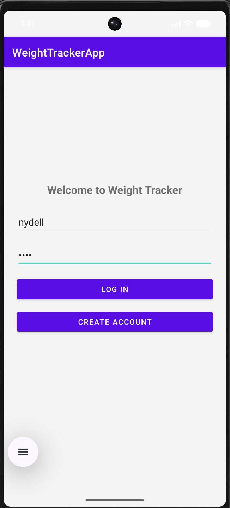
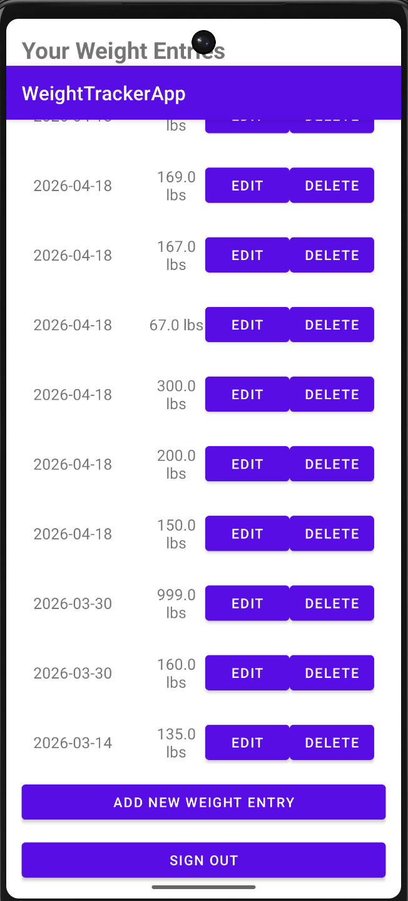
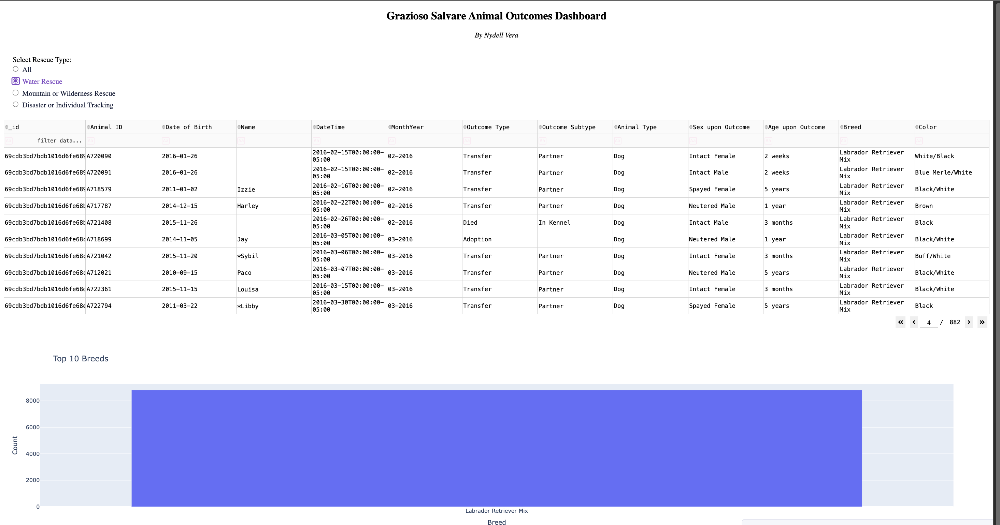
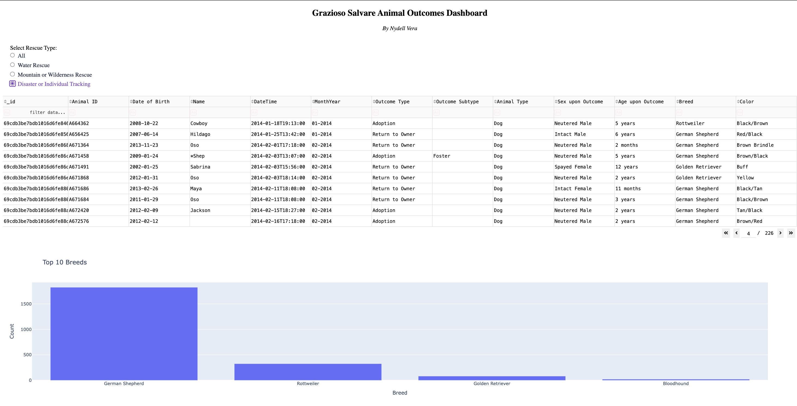

Portfolio Highlights
Code Review Video
This code review introduces the three artifacts selected for my capstone portfolio and explains the weaknesses I identified, the enhancements I planned, and how each project connects to a different category in the program. The review covers my CS 320 Java service management system, my CS 360 Android weight tracker, and my CS 340 Python and MongoDB dashboard project.
Watch My Code Review VideoEnhancement 1: Software Design and Engineering
Overview: This artifact is a Java-based service management system built around three connected components: Appointment Service, Contact Service, and Task Service. Each section of the project includes a model class, a service class, and unit tests. The project demonstrates object-oriented design, encapsulation, validation, and test-driven thinking by separating responsibilities between data models and service logic. The original artifact already showed solid fundamentals, but it also had weaknesses that made it a strong candidate for enhancement, especially in code consistency, documentation quality, and real-world usability.
Enhancement: For this enhancement, I focused on improving the project as if it were being prepared for more realistic software use instead of only meeting the original assignment requirements. First, I added clearer and more consistent comments across the files because the original comments were uneven and made some parts easier to understand than others. Next, I corrected the missing final keyword on the taskMap field in TaskService.java, which improved consistency with the other services and helped protect the integrity of the object reference. Finally, I added a rescheduling feature to the appointment portion of the system by creating logic that allows an appointment date to be updated while still validating the new date the same way the constructor does. This made the project stronger from a software design perspective because it extended the system beyond the original classroom requirement and made it behave more like a real scheduling application.
Skills: Object-oriented programming, software design, maintainability, validation, unit testing, code consistency
Enhancement 2: Algorithms and Data Structures


Overview: This artifact is an Android weight tracker application written in Java in Android Studio. The app allows a user to create an account, log in, and manage daily weight entries. Its core files include MainActivity, WeightEntriesActivity, WeightAdapter, WeightDatabaseHelper, and WeightEntry. Together, these files handle account creation, login validation, local database operations, display of weight records, and editing or deleting entries. I chose this project because it is a complete working application that combines user interaction, data storage, and application logic in a way that clearly shows both strengths and areas that could be improved.
Enhancement: My enhancements focused on both security and the quality of the logic used to process data. The most important improvement was adding password hashing in WeightDatabaseHelper.java so passwords are no longer stored in plain text. I used SHA-256 hashing so user credentials are stored more securely. I also added weight range validation in both WeightEntriesActivity.java and WeightAdapter.java so the app rejects unrealistic values below 50 pounds or above 1000 pounds instead of accepting any numeric input. In addition, I created a toString() method inside WeightEntry.java to make the object easier to inspect and debug, since Java objects without toString() are harder to read during development. Lastly, I improved documentation by adding useful comments throughout the project to explain the most important sections of the code. These changes strengthened the artifact by improving data handling, input control, debugging support, and security.
Skills: Java, Android Studio, SQLite, input validation, security, data handling, debugging, mobile UI development
Enhancement 3: Databases




Overview: This artifact is my CS 340 database project, which combines a Python CRUD layer with an interactive dashboard built on top of a MongoDB database. The backend uses an AnimalShelter class in animal_shelter.py and crud.py to perform create, read, update, and delete operations through PyMongo. The front end uses a dashboard to display and filter animal shelter data. This project shows my ability to work with database connections, CRUD operations, query-driven filtering, and data visualization in a more complete database application rather than just a small script.
Enhancement: My enhancements for this project centered on security and defensive programming. In the original version, the database credentials were hardcoded directly in the source code, so I moved them to environment variables using os.environ.get() so the username and password no longer appear in the code itself. I also strengthened validation in the create method by requiring important fields such as animal type, breed, and name before allowing a record to be inserted. In the original artifact, incomplete documents could be stored as long as the input was not empty. Another major improvement was adding safety checks to the update and delete methods so empty queries are rejected. Since those methods use update_many and delete_many, an empty query could affect the full collection, so this change protects the database from accidental destructive operations. I also had to rebuild my environment locally after the original Apporto environment was no longer available, import a similar public Austin animal shelter dataset, and adapt the dashboard because the replacement data did not include rescue coordinates. That process showed problem solving beyond just code changes and helped me successfully restore the project in a local environment.
Skills: Python, MongoDB, PyMongo, CRUD operations, data validation, security, dashboard development, problem solving